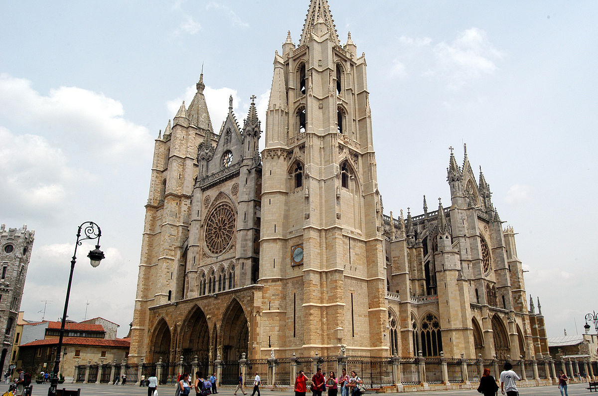
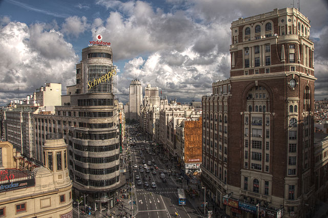
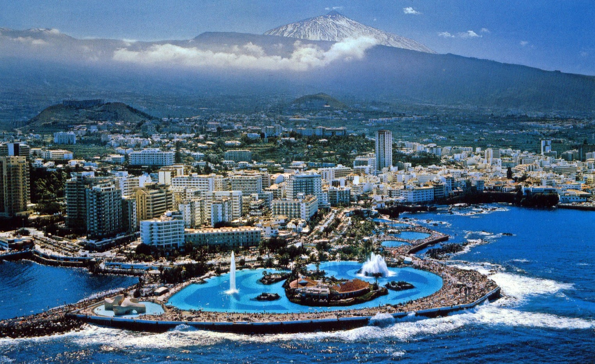

¿Qué somos?

La Lagunamore_vert
La Lagunaclose
San Cristóbal de La Laguna, conocida popularmente como La Laguna,
es una ciudad y municipio perteneciente a la provincia de Santa Cruz de Tenerife,
en la isla de Tenerife —Canarias, España—. Su capital administrativa se ubica en la ciudad de San Cristóbal de La Laguna,
Se encuentra en el noreste de la isla de Tenerife, junto a la ciudad de Santa Cruz de Tenerife,
con la que se halla física y urbanísticamente unida.

Leónmore_vert
Leónclose
León es un municipio y ciudad española ubicada en el noroeste de la península ibérica,
capital de la provincia homónima, en la comunidad autónoma de Castilla y León. León contaba en enero de 2013 con 130.601 habitantes
repartidos en una superficie de 39,03 km², y un área metropolitana de 208.899 habitantes según el mapa de áreas
funcionales de la Junta de Castilla y León, distribuidos en quince municipios,
siendo así la segunda más poblada de la comunidad.

Madridmore_vert
Madridclose
Madrid es un municipio y una ciudad de España. La localidad, con categoría histórica de villa,3 es la capital del país4 y de la Comunidad de Madrid.
También conocida como la Villa y Corte, es la ciudad más poblada del Estado, con 3 165 235 habitantes empadronados según datos del INE de 2014 mientras que,
con la inclusión de su área metropolitana5 la cifra de población asciende a 6 543 031 habitantes,5 siendo por ello la cuarta o quinta área metropolitana,
según la fuente, por detrás de las de París y Londres, y en algunas fuentes detrás también de la Región del Ruhr, y la tercera ciudad más poblada de la Unión
Europea, por detrás de Berlín y Londres

Puerto de la Cruzmore_vert
Puerto de la Cruzclose
Puerto de la Cruz es un municipio y ciudad perteneciente a la provincia de Santa Cruz de Tenerife, en la isla de Tenerife —Canarias, España—.
Puerto de la Cruz fue el lugar donde comenzó el turismo en Canarias. En el año 1886 en este pequeño puerto del valle de La Orotava se estableció
el primer sanatorio del archipiélago para acoger a los turistas enfermos. Fue además el primer centro turístico español de ámbito europeo.
| Origen | Destino | Veces realizado |
|---|---|---|
| Madrid | Barcelona | 1500 |
| León | Burgos | 1189 |
| La Laguna | Los Cristianos | 955 |